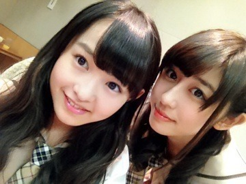
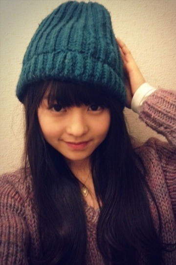
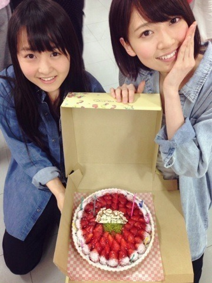
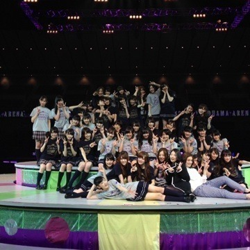
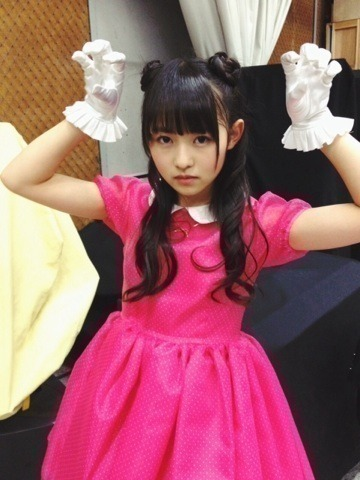
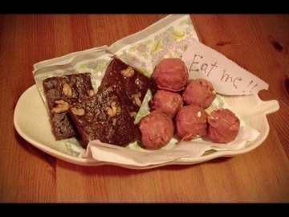
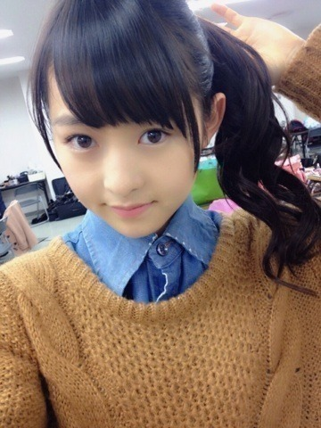
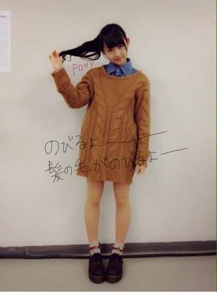
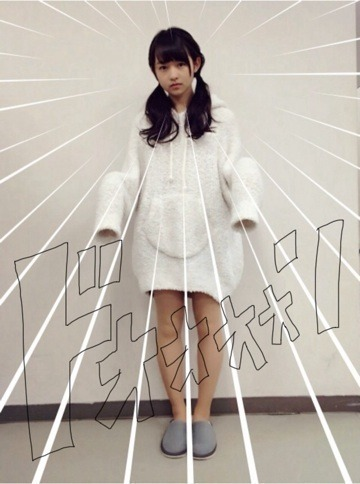
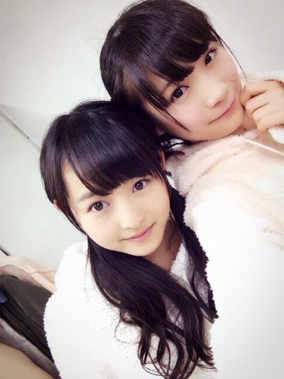

2014/0226Wedマッシュ4冊。550回目
モバイルメールが始まりました。
お便り的な感じではなく、
普通に普通なことをメールで。
毎日するよー♪
誕生日、ライブについてこんなに
コメントくるとは思わなかった...
ありがとうございます！
まりっか'17やってよかったなあ。

遅ればせながら、
ちーちゃんお誕生日おめでとう！
本当に美形でこんな顔に
うまれたかったと思ったことあります。
自分から意見を言ったあと、
絶対ちーちゃんのこと見ちゃう。
私の中でちーちゃんが頷いてくれたら
きっと大丈夫だ！みたいなものがある。
そうやってどこかでちーちゃんのこと
頼ってるんです。
ちーちゃんだいすきです。
大組閣について
乃木坂46は乃木坂46として
違うグループとして成立してる
と思っています。
だからこそ、こんなかたちで
良いのかなと思ってしまいます。
でも、私達にしか出せない色を
全面に出すチャンスなんだと思う。
変わり続けなきゃいけない。
前向きに考えなきゃ！
生駒ちゃん頑張れ！
勢いそのままに〜〜〜

最近よくかぶる帽子！！
まりか
2014/0223Sun難関は休憩中。549回目
乃木坂46 2歳おめでたい！
バースデーライブが終了しました。
1st〜7thまでの歴史の振り返り。
VTRで何度も泣きそうになりました。
オリジナルメンバーで
全曲披露ということで
みなさんも嬉しかったと思う！
狼に口笛を
センターステージを使って
360度回りながら踊り
音が出ないギター
強風に当たりながら歌ったり
他の星から
自分がスクリーンに映ったり
踊ってはないけど、
マネキンのオープニングのレーザーが
めっちゃかっこよかったり
センターステージは
デコレーションケーキになったり
回ったりといろんな仕掛けがあって
代々木のように外周もあったので
みなさんと近くまで行けてよかった。
団扇もタオルもたくさん見つけたよー
最後にゆみ姉もせっちゃんも
来てくれて一緒に歌って。
内容が濃すぎて全部話すの大変。
みなさん、長時間お疲れ様でした。
休憩中には個人pvの歌VTRが
流れたのですが、サプライズで
実際歌わせてもらいました。
やると決まった時は
嬉しかったのですが、
当日が近づくに連れて
めちゃくちゃ怖くなってきて...
不安だらけでした。
休憩中だしメンバーもいないし...
休憩中とはいえ、
横浜アリーナという素晴らしい舞台に
一人で立てたことは凄く大きいこと。
登場して歌った時
予想以上に歓声が大きかったです。
休憩中にも関わらず
一緒に歌ってくれて
とても暖かく迎えてくれて
まりっか'17が私とって
どれだけ大きなものであるか
改めて感じました。
終わった後全力で逃げたけどね、
これがなかったら
私はどうなってたんだろう。
18歳の初まりにこのような
とても貴重な体験ができました。
良いスタートがきれて幸せ！

だいすきな苺タルトだったああああん
ななみおめでとうー
オープニングMCで
大勢の人にお祝いしてもらえて
幸せだったー
2月20日生まれの特権！
スタッフのみなさん
本当にありがとうございました。
お疲れ様でした。
勢いそのままに！
次の大イベントは
16人のプリンシパル3だーーー！
大変だーーーーー！

3年目も乃木坂46を
よろしくお願いします。
まりか
2014/0220Thuかぼちゃブーム！548 回目
18歳になりました！
17歳の年は本当に濃ゆかった。
たくさんのことをさせてもらいました。
想像していなかったことが
たくさん起きたなあ。
一年前より強くなった気がします。
それくらいいろんなことを経験して
いろんなことに刺激を受けてきました。
まだまだ挑戦したいことがあるし
もっと強くなるにはたくさんのことを
知って、経験しなきゃいけないんだ
と思います。
今この場所にいれることが
本当になにより幸せだし
これから楽しみです。
いつも応援してくださる
みなさんありがとうございます。
握手会やブログのコメントなど
とても心強いです。
支え合って一緒に
がんばっていけたら良いなー
お父さんお母さんお兄ちゃん
いつもお世話になります。
18歳なのでもうわがまま言いません。
言わないよう努力します。
ずっと応援してくれてありがとう。
努力感謝笑顔！
初心を忘れず。
ちゃんと受け止めて、
悩んで考えること。
遠慮せず突っ走っていきたい。
ゆるくまじめに私らしく
良い1年になればいいな。
まずはライブ！
18歳を迎えて最初のイベントです。
スタッフさんメンバー
みんなで頑張ります！

これからもよろしくお願いします！
伊藤万理華
2014/02/20 10:18｜個別ページ｜コメント(1138)
2014/0215Satソファに寝転んだら おわりだ。547回目
ハッピーバレンタイン
チョコバナナケーキ
苺コーティングチョコレート
これは昨日の朝リビングに置いたの。
バレンタインは私にとって
お菓子作りの日というか、
今日は何か甘いもの作ってみよう
と思う日です。チョコ系の、
女子はみんなそうか笑
うまくいったから
家族にも食べてもらってます！
昨日は大雪が再び...
外吹雪いてるの見てびっくりした。
こないだよりひどい。
そんな中一日撮影でしたよ。
外じゃないから安心。
みんなでわいわいわいわいしました。
もうわいわいわいわいして
テンション高かったよー
いえーいいえーいふぅうふぅう
な感じ
どんなのになるのか楽しみだなあ
みなさんもお楽しみに！
今日は余ったチョコで
ブラウニーぽいの作って食べた
なんで作っちゃったんだろ
昨日から食べ過ぎ
バレンタインこわい
もうやめとく泣

明日も撮影頑張ります！
まりか
2014/0212Wed青でもよい血色。546 回目
今日は幕張メッセで個握でした。
1部ポニーテール

KINJIのデニムシャツに
E hyphenのニットワンピ
かわいい靴下に厚底のマーチン
靴下大人気だった！
みなさん全身ちゃんと見てるんですね。
気が抜けないですね。
2部 ポニーテール横にねじったやつ
3部 巻きツインテール

gelato pique
かわいいポーズができなかったのか
問いたいな。そこだな
だいすきなパーカーの部屋着！
あったかいよ。
こちらも好評でした。
ルームウェアは強い！！！
女子！！！！
握手会が始まる前に
雪が降ったのかな？
寒い中来てくれて
ありがとうございました。
冷え冷えの手を少しでも
あたためられたかな。
といいつつ私も冷え性なんだけど泣
今日は全完売だったみたい。
本当にありがとうございました！
選抜発表明けの握手会なので
その話題が多いかと思ったら
意外と少なくて。
私のブログが前向きすぎたのか
みなさん安心してくれたみたいで、
だから、嬉しかったです^^
LIVEDVDや横アリについてが
多かった！
横アリ行くまでにDVD見てねっ
最近は制作とかで忙しいっ
でもそれが楽しいっ
そうそう、
LIVEDVD副音声の動画で
私、すごい訛ってましたが
あれは正常なのです。
生まれは大阪で神奈川出身という
ややこしい人間のため
さゆりんたち大阪出身の子といると
余計訛ってしまいます。
お許しください。
どうしても治りません。
中途半端に訛った喋り方は
私の特徴と見てください笑
3月の握手会もよろしくお願いします！

おやすみなさい
まりか